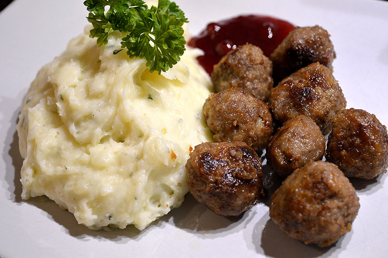

Köttbullar med potatismos
Ingredienser (4 port.)
Köttbullar
- 500 g köttfärs
- ½ dl ströbröd
- 1 dl grädde
- 2 msk finhackad lök
- 1 ägg
- 1 tsk salt
- 1 krm svartpeppar
- 2 msk smör
Potatismos
- 1 kg mjölig potatis
- 2 dl mjölk
- ½ dl matlagningsgrädde
- ½ gurka
- salt och peppar
Instruktioner
Köttbullar
- Blanda ströbröd och grädde. Låt svälla 10 min.
- Lägg i färs, lök, ägg, salt och peppar. Rör till en jämn smet.
- Forma färsen till jämna bullar.
- Stek dem i smör på medelvärme 3-5 min.
Potatismos
- Skala potatisen och skär i bitar.
- Koka den mjuk i lättsaltat vatten 10-15 min.
- Häll av vattnet och pressa potatisen genom purépress eller mosa med en stöt direkt i kastrullen.
- Värm mjölken och grädden och rör ner i potatisen.
- Smaksätt med salt och peppar.
- Rör moset luftigt.
Servera köttbullarna med potatismoset och gurkan skuren i skivor.
Näringsvärden
- Energi: 555 kcal
- Protein: 32 g
- Kolhydrater: 43 g
- Fett: 27 g
Kommentarer
Sebastian
Jättegod rätt! Potatismoset blir krämigt och fint med grädden.
Lisa
Jag lade till kantareller i moset för godare smak.
Johan
Gillar inte löken i köttbullarna, annars helt ok. Råkade överarbeta köttbullröran så att de blev alldeles för fasta